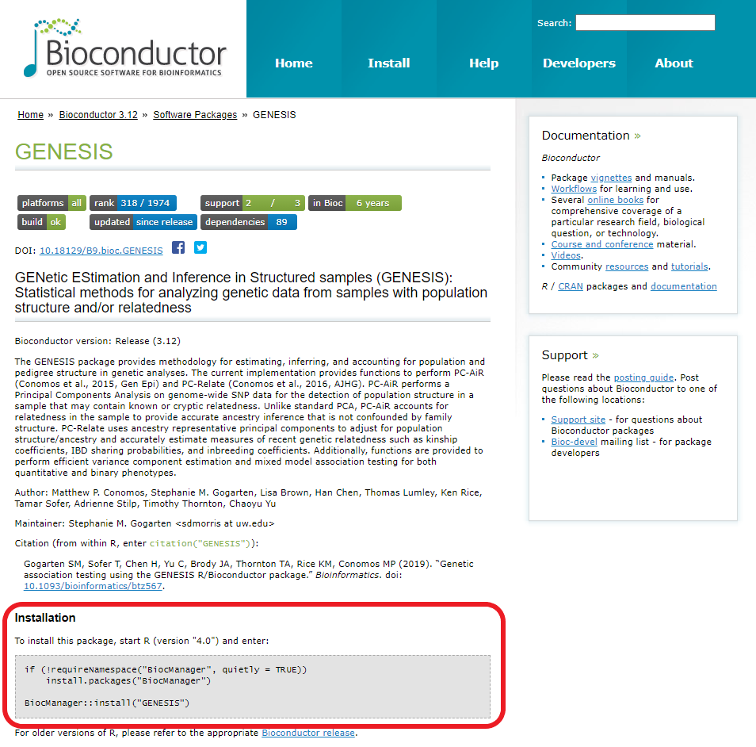
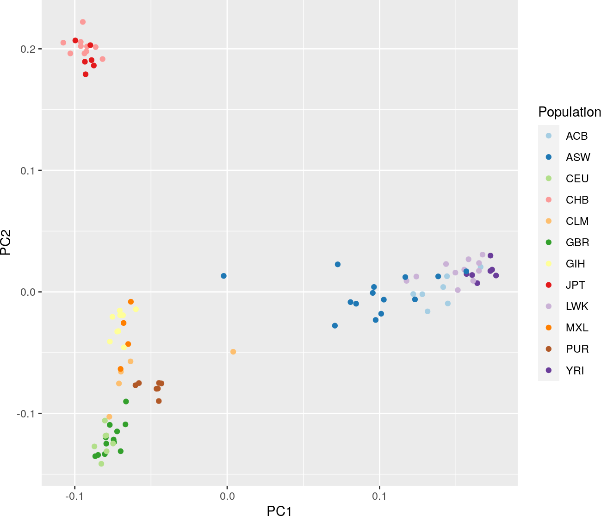
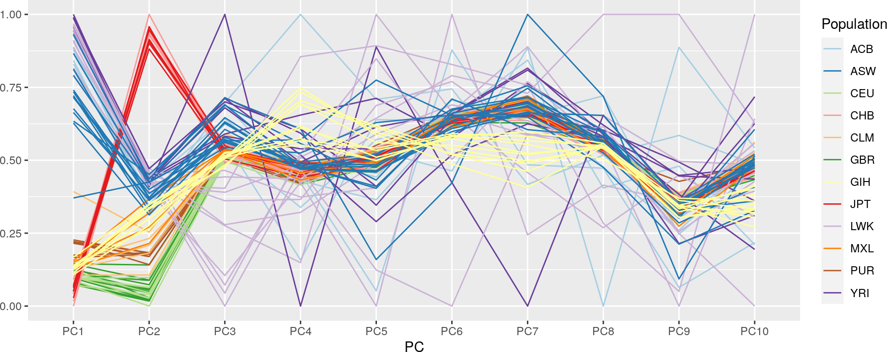

Bioconductor y GENESIS
Bioconductor
Bioconductor es un repositorio de paquetes para R, diseñados para el análisis y comprensión de grandes cantidades de datos genómicos.
Estos paquetes pueden clasificarse en cuatro tipos:
- Software, paquetes de funciones para usar en nuestros análisis de datos.
- Anotación, para la interacción con bases de datos genómicos.
- Datos experimentales, distribución de datos de experimentos, como los que hemos usado en apartados anteriores.
- Workflow, muestran cómo usar paquetes de R y/o Bioconductor en un análisis concreto.
La cantidad de paquetes que ofrece este repositorio es enorme, y es imposible conocerlos todos. Cada investigador empleará unos paquetes u otros, dependiendo de las necesidades de su trabajo. La selección de paquetes que ofrece cada uno es, por tanto, muy personal. Si necesitas tener una visión global sobre lo que ofrece Bioconductor es recomendable empezar a buscar por su página de ayuda.
Instalación de paquetes
Para instalar paquetes de Bioconductor, primero debemos instalar BiocManager, paquete que administra la instalación de aquellos que se encuentran en Bioconductor. Esto es muy sencillo, simplemente copia y pega lo siguiente en la consola de R:
1 2 3 | |
Una vez ha terminado (puede tardar unos minutos), el paquete instala la versión más reciente (en el momento de creación de este tutorial, la 3.12; puede haberse lanzado una nueva versión, aunque el método de instalación es el mismo) y ya puedes instalar cualquier paquete de Bioconductor. Para ello, entra en la página del paquete en el que estés interesado. Abajo te aparecerá un cuadro de código para que lo copies y lo pegues en la consola:

En este ejemplo, el texto será el siguiente. Cópialo y pégalo en la consola para instalar GENESIS, pues lo vamos a usar como ejemplo a continuación.
1 2 3 4 | |
1 | |
Nota
Como verás, antes de instalar el paquete, el comando comprueba si tienes instalado BiocManager. Si no es así, lo instalará de forma silenciosa.
Cómo usar paquetes de Bioconductor
Cada paquete incluye su propia "vignette" (una guía con toda la información necesaria que aparece en la ventana "Help"), que puedes ver usando:
1 | |
También puedes ver toda la información en el navegador o en formato .pdf justo debajo de la sección de instalación en la página del paquete.
Paquete GENESIS
Uno de estos paquetes es GENESIS (GENetic EStimation and Inference in Structured samples). Este contiene una serie de herramientas para trabajar con numerosas metodologías complejas dentro del campo del análisis de secuencias genómicas.
GENESIS presenta dos programas únicos para el análisis de datos genómicos de muestras con estructura poblacional y/o parentesco: PC-AiR y PC-Relate.
PC-AiR
PC-AiR (Principal Components Analysis in Related Samples) es un método basado en PCA (Principal Components Analysis), que se aplica en el genotipado de cientos de miles de polimorfismos puntuales (SNPs; Single Nucleotide Polymorphisms) a lo largo de todo el genoma de las muestras para agruparlos en Componentes Principales (PCs) y estudiar la inferencia de estructura poblacional.
Sin embargo, PCA no tiene en cuenta el posible parentesco que exista entre las muestras analizadas, cuestión clave a la hora de identificar SNPs. PC-AiR, por el contrario, sí que tiene en cuenta el parentesco, pudiendo así identificar SNPs y PCs con mayor precisión.
PC-Relate
PC-Relate (Relatedness Estimation Adjusted for Principal Components) es capaz de estimar el parentesco entre muestras sin estructura poblacional especificada, empleando PCs de poblaciones representativas muy estudiadas e indexadas, calculadas con PC-AiR.
Análisis de secuencias genómicas
Tanto PC-AiR como PC-Relate son las herramientas principales que usa GENESIS para el resto de aplicaciones, pudiendo emplearse en multitud de tareas de genotipado de muestras. Por ejemplo, a la hora del análisis de secuencias, los PCs de PC-AiR pueden usarse para la estratificación de una población, y PC-Relate se emplea para determinar la correlación fenotípica en la muestra.
Ejemplos
Un ejemplo de cómo puede usarse este paquete es el siguiente. Imaginemos que necesitamos saber que PCs son ancestrales dentro de una determinada población. Para ello, en un eje de coordenadas se enfrentan los genomas de 1000 individuos de poblaciones distintas.
Nota
Este apartado es opcional, así que simplemente puedes seguir leyendo y no es necesario que lo realices por ti mismo.
Primero, instalamos y ejecutamos los siguientes paquetes (si no los tienes instalados ya):
1 2 3 | |
1 2 3 4 | |
A continuación representamos los SNPs, que están incluidos en un archivo .gds que contiene toda la información de variaciones de la secuencia problema (en este ejemplo, SeqData). Primero debemos definir una variable que contenga la información necesaria. Para ello, se usa el comando pcair():
1 2 3 4 | |
Después, trabajamos exclusivamente con el apartado de vectores de la variable creada, que contiene los PCs:
1 2 3 4 5 6 7 8 | |
Finalmente, representamos los datos en un diagrama de dispersión de la siguiente forma:
1 2 | |

Puedes también representar estos mismos datos, pero teniendo en cuenta el grado de relación que existe entre las diferentes poblaciones y los PCs con un diagrama de líneas:
1 2 3 | |

Viendo esta última gráfica podemos ver cómo la relación entre las poblaciones y los PCs es muy variable. Por ejemplo, JPT y CHB (líneas roja y rosa respectivamente) presentan una alta relación con el set de PC número dos, mientras que apenas la tiene con el número 1. Apreciamos también cierto grado de relación de estas dos poblaciones con el resto de PCs.
Como puedes deducir con estos estudios, trabajar con este tipo de programas requiere de tiempo y dedicación. Puedes estudiarlos más detalladamente en la página de documentación de GENESIS, de donde provienen estos ejemplos.
Resumen
Las posibilidades que ofrece este paquete (y todos los demás) son casi ilimitadas y, como se ha mencionado anteriormente, es casi imposible conocerlas todas, pues necesitas trabajar durante mucho tiempo con un determinado conjunto de paquetes para poder manejarlo con soltura. La introducción a este mundo puede ser bastante complicada en un principio, pero no tarda mucho en compensar el esfuerzo. En este tutorial hemos mostrado el potencial que ofrece GENESIS a la hora de trabajar como bioquímicos, pero existen muchos más y, de nuevo, los paquetes que uses van a depender de tus necesidades laborales.